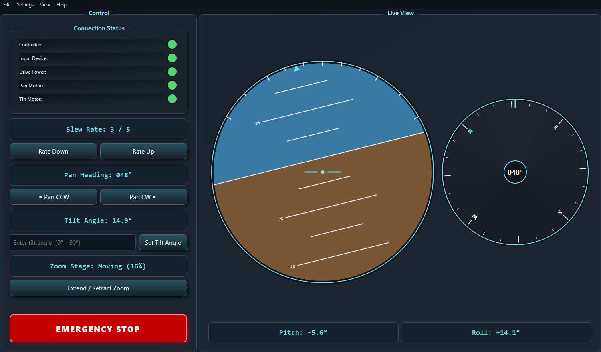

A desktop operator console for a two axis camera platform. Python and PyQt6.
Some of my professional work can't be shown publicly, so I built this as a stand-in. It uses the same design patterns and interface techniques I developed on the job, applied to a neutral example and wired to a software simulator instead of real hardware.

This is a desktop app, so it runs locally rather than in the browser:
pip install -r requirements.txt python gimbal_console.pyView the code on GitHub